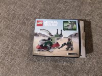
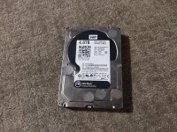
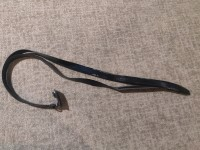
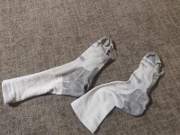
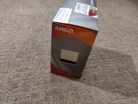

Week 33 – What a Piece of Junk!
Preface
Every week I am reminded of the importance of this project. Many people don’t realize the volume of trash that they generate on a regular basis. People often focus on the obvious items like food waste and single-use plastics, but they don’t always realize that almost every item in our day to day lives is designed to be disposable eventually.
Nowhere better is this illustrated than in this week’s Trash Report. Items that can break are items that can be discarded. As a culture we should move in the direction of long-lasting, robust materials and repairable products. Products that need to be thrown away after being broken or worn down are not sustainable, they lead to an endless cycle of manufacturing future waste. This is already starting in some areas, such as the right-to-repair movement in the electronics industry. Additionally, some legislators, such as those in the EU, have begun creating laws related to cutting down on electronic waste (mandating removable batteries, standardizing USB-C as a charging cable). These kinds of ideas could be applicable to every field, if we put more thought into sustainability. I hope that by reading this blog you can gain an understanding of how much trash you generate yourself, so that you may try to limit it (either by limiting excessive purchases or by buying repairable products).
Read More...Return to Top
Overview
This weekend, just like every weekend, I went through my regular cleaning routine. I am shocked that after 33 weeks I still have so much stuff to dispose of. While past weeks have been more focused on cleaning out a particular area, or on generic stuff like food trash; this week in particular was focused on used items that have served their purpose, particularly those that are broken.
The first group of items I disposed of were the obvious items that broke this week. This included my belt, a comic book, a pair of socks, and my hard drive. My belt was bought when its predecessor broke, if I remember correctly I bought it at Target about 3 years ago. That’s an unfortunately short lifespan for such an important item, I should seek out a replacement that will last longer. The comic book is one I bought at a bookstore as a kid nearly 13 years ago, and read over and over again extensively. It got damaged through normal wear and tear, and I felt it was time to part with it as it was ripped nearly to shreds. Next up was a pair of socks, which have started to become a regular appearance on this blog as of late. These ones were particularly badly damaged with multiple holes across the bottom of both individual socks. I hope that my thicker replacement socks last a bit longer. The damaged socks were bought about 10 years ago and went through extensive wear and tear. The last broken item I got rid of was my hard drive. This was particularly sad, as this hard drive was the one I put into my very first desktop PC (the one I am typing this on) when I built it. It was about 5 years old used when I build the PC, and as of now is about 11 years old. It makes sense for it to have succumbed to bad sectors after so long, but it’s unfortunate that it didn’t survive longer. Fortunately, I didn’t lose anything thanks to my backup server that made regular copies nightly.
The second group of items I disposed of were those which were not broken but had served their purposes. These items were a LEGO box, an envelope, a hair product container, and some Pokemon code cards. The LEGO box contained a set that I bought last year, built, and then put back in the box. Now that I have space to display the set I no longer need the box. I originally got it while I was food shopping with my girlfriend because I noticed that it was on sale. The envelope doesn’t have as interesting of a story, it was used to send me some mail last week, and now that I’ve opened and read the contents the opened envelope is no longer of any use to me. As for the hair product container, I bought that about 9 years ago to style my hair. It finally ran out last week. I’m very impressed that it lasted so long. Lastly, the Pokemon code cards I bought with a giant collection of Pokemon cards at a yard sale for cheap in 2018. These three in particular I found underneath my desk while cleaning, I’m assuming they got lost there somewhere in the last 6 years. Since they were already used, I just recycled them.
The last group only contains one item, but it’s such an outlier that it didn’t fit into either of the other two groups. This item is a CPU, which I got from my former employer, and which I finally donated to a friend this week. I’ll explain the story of it in more detail in the Profile section, because I’ve selected it as this weeks’ Item of the Week. It felt really good to have one item that was not thrown out or recycled, but that somebody else was actually able to find some use in.
Return to TopGallery
|

Empty LEGO box |

Broken Hard Drive |
Used Pokemon Code Cards |

Spare CPU |

Empty Envelope |
Ripped Comic Book |
|
Empty Hair Product |

Broken Belt |

Holey Socks |
Item Data
| Item Name | Weight | Cost | Source | Location | Time Owned | Mode of Disposal |
|---|---|---|---|---|---|---|
| LEGO Box | < 1 lb | $$$ | Target | Basement | 1 month | |
| Hard Drive | 5 lb | $$$ | Dad | Basement | 6 years | |
| Pokemon Code Cards | < 1 lb | $$$ | Yard Sale | Desk | 4 years | |
| CPU | 5 lb | $$$ | Former Employer | Basement | 3 years | |
| Envelope | < 1 lb | $$$ | Desk | 1 week | ||
| Comic Book | < 1 lb | $$$ | Barnes+Noble | Bookshelf | 13 years | |
| Hair Product | 1 lb | $$$ | Hairdresser | Bathroom | 9 years | |
| Belt | 1 lb | $$$ | Target | Bedroom | 3 years | |
| Socks | < 1 lb | $$$ | Target | Bedroom | 10 years |
Profile
As mentioned above, my Item of the Week for this round is the spare CPU that I donated. I’ve had it sitting around in my basement for years. It was bought originally not by me but by the owner of a metal shop that I was working for, my job was to design and build a replacement backup server. The CPU was ordered for the new server, however it was ordered from Amazon in 2021 when there were massive shipping delays, and it ended up arriving over two months after it was ordered. In the interim, I managed to buy an equivalent chip from Best Buy in person. As a result, the CPU that was ordered online was no longer necessary. I suggested returning it, but the metal shop owner felt that that would be too much of a hassle, so he just gave the CPU to me. Since I already had a very similar chip in my desktop, and I wasn’t planning on building a new PC anytime soon, the CPU just sat in the box in my basement for a couple years. I finally was able to get rid of it this week by donating it to a friend who wanted it for his new PC build.
The CPU is a Ryzen 3 3200G, designed and manufactured by Advanced Micro Devices, Inc (AMD). It is one of the earlier generation Ryzen chips, which are a line of CPUs started in 2017 that were designed to be competent and powerful for a substantially cheaper price than their competitors. My own desktop uses a Ryzen 3 2200G chip, which I got for less than $90 in 2018. An equivalent Intel CPU could have easily cost me over $300. The CPU that I donated was built on the Zen+ microarchitecture, with a 12nm process. It has 4 cores and 4 threads as 3.6 GHz along with a built-in graphics chip. That was part of what made it useful for the server, was that we didn’t have to buy a separate graphics card.
Return to Top
Coda
That’s all I’ve got this week, thank you so much for reading! If you enjoyed (or learned something), please leave a comment or share it on your social media feeds! I really appreciate the feedback. See you next week!